Authentication Extensions
Authentication SPI
Red Hat Single Sign-On (RH-SSO) provides an Authentication SPI that can be used to implement custom authentication mechanisms. In this example, we will demonstrate a simple two-factor authentication (2FA) flow using RH-SSO and a Telegram bot.
The custom authenticator consists of three components:
-
Authenticator: Prompts the user to enter the 2FA code provided via Telegram.
-
Required Action: Provides an enrollment process if the user’s Telegram ID is not present in their profile.
-
Telegram Service: Handles communication with the external Telegram API.
Configuring Plugins and Authentication Flows
The plugin implementation telegram-authentication-spi can be deployed in several ways:
-
Extending the RH-SSO image.
-
Mounting a volume with the plugin file.
-
Using a configmap (recommended only for metadata).
-
Copying the plugin into the pod (ephemeral).
-
Other methods.
Steps to configure the authentication flow:
-
Open the RH-SSO administration web console.
-
Navigate to
Authentication→Flows. -
Select
Browserin the drop-down list and clickCopy.
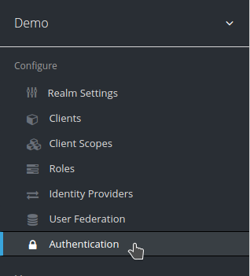
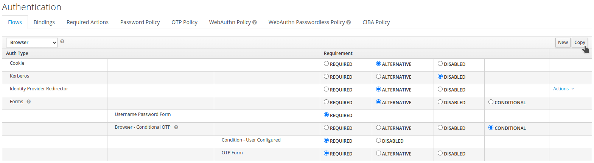
-
Provide a name for the new browser flow.
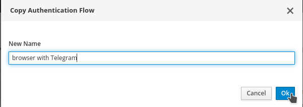
-
Click
Actions→Add execution. SelectBrowser With Telegram Browser - Conditional OTP.
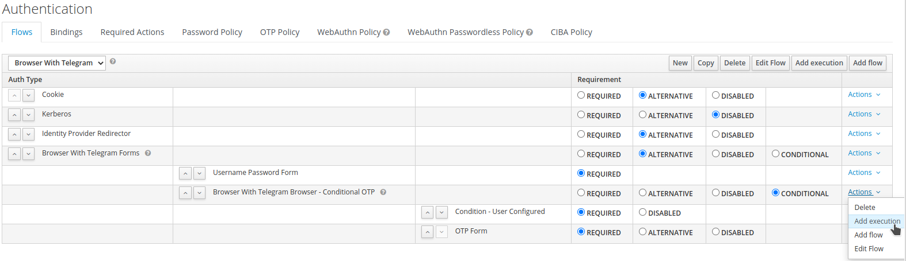
-
Choose Telegram Authentication and click
Save.
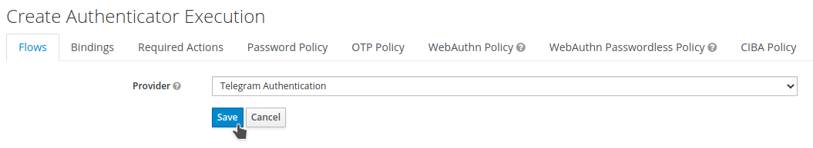
-
Configure the execution:
-
Browser With Telegram Browser - Conditional OTP→ REQUIRED -
OTP Form→ DISABLED -
Telegram Authentication→ REQUIRED
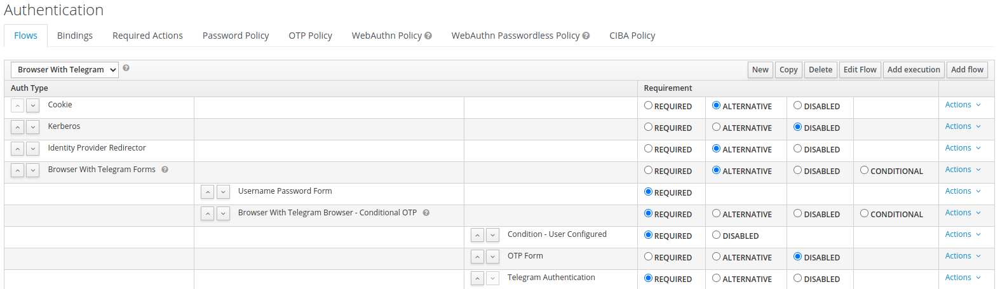
-
Click
Actions→ConfigonTelegram Authentication. Set an alias and clickSave.
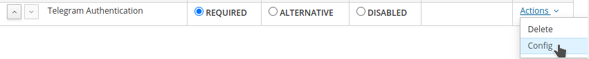
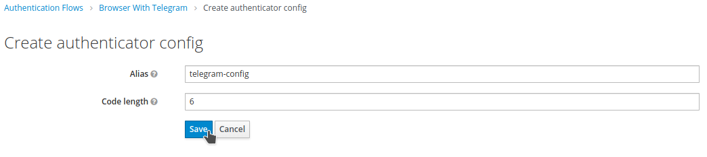
-
Navigate to
Authentication→Required Actions→Register. -
Select Telegram ID in the drop-down list. Click
Ok.
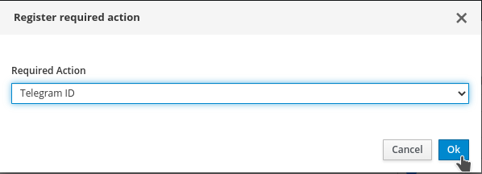
-
Bind the new flow:
-
Navigate to
Authentication→Bindings. -
Select Browser with Telegram in the
Browser Flowdrop-down list. -
Click
Save.
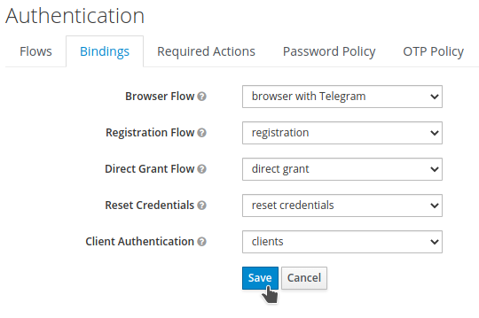
Two-Factor Authentication with Telegram
-
Open a new private/incognito browser session.
-
Navigate to the Quarkus Petclinic application. You will be redirected to the RH-SSO login page.
-
Log in as user
angel.
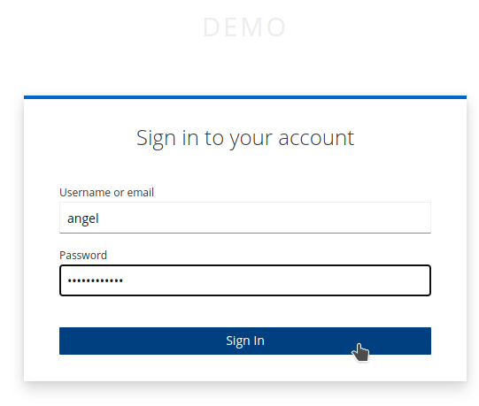
Since this is the first login after 2FA setup, the enrollment process is triggered.
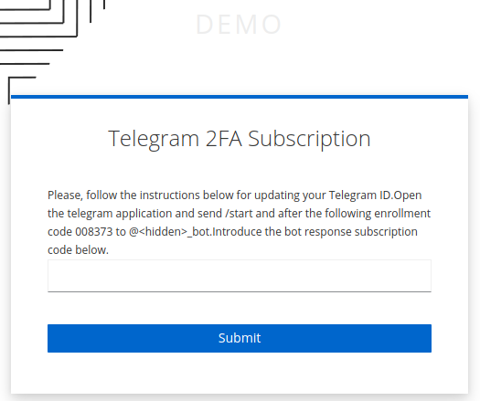
-
Open Telegram and send the enrollment code to the bot. Submit the secure code received from the bot.
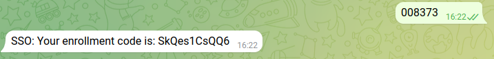
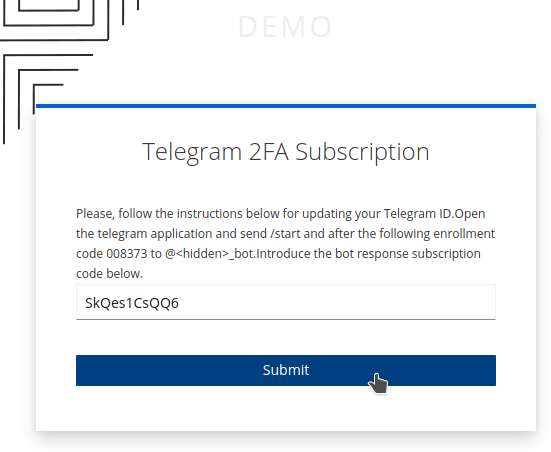
After successful enrollment, the user is logged in, and the Telegram attributes are added to the user profile.
-
Verify the Telegram attributes in RH-SSO:
-
Navigate to
Demorealm →Users→View all users. -
Select user
angeland clickAttributes.
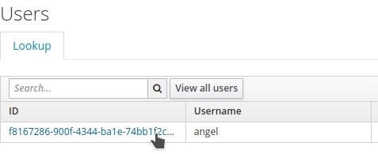
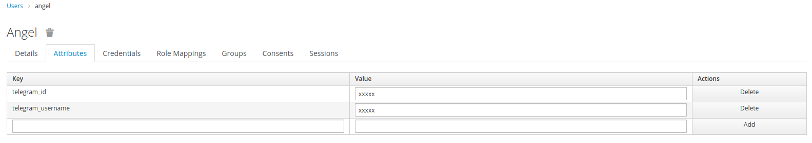
-
Subsequent logins require the 2FA code:
-
Open a new incognito session.
-
Log in as
angel. The 2FA code will be requested.
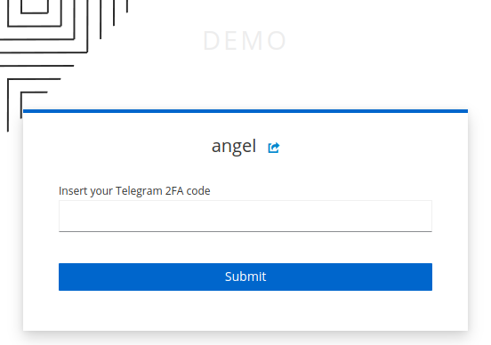
-
The code is sent via Telegram bot. Submit the code.
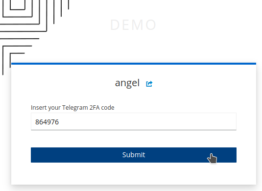
The user is successfully logged in to the application with 2FA enabled.